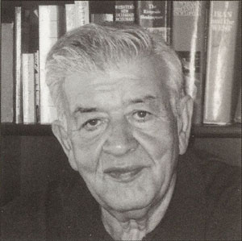

I met Cyrus Ghani in a friends gathering in the San Francisco Bay Area in 2001. We chatted about Iran, his book about Qajars and Reza Shah, etc. What clicked between us was cinema. We talked about his favorite films and my favorite directors. He listened politely while I was telling him about Bunuel, Fellini and Woody Allen, with occassional references to Frank Capra, John Ford and Billy Wilder. At the end he said 'Strange combination', with a smile. Since then we are friends. I try to visit him when both of us are in Los Angeles. We go to a coffee house and talk about films, actors and actresses, fools and kings. I am really previledged to know him.

Cyrus Ghani (taken from the cover of his book My Favorite Films--I'll try to put a picture of him with myself here.)